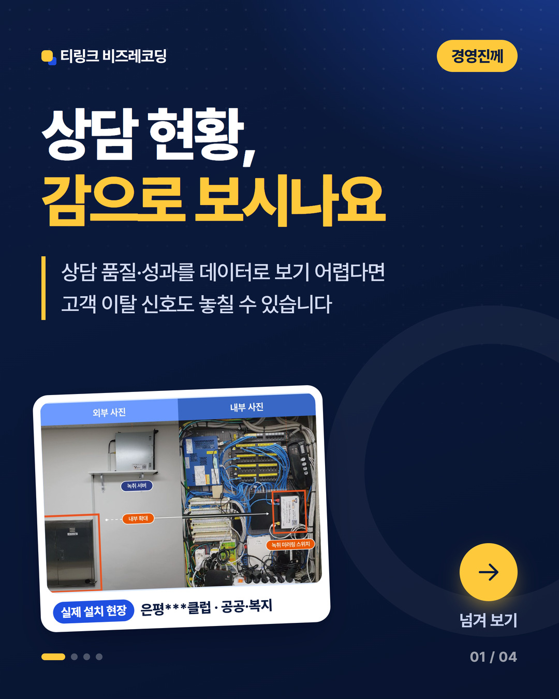

09 ② 차별화된 가치 → 콘텐츠
현장 사진 한 장이, 결정자별 카드뉴스가 됩니다



카드뉴스 4장
문제 → 해결 → 근거 → 도입 문의
네이버 블로그
티링크 가이드라인 필수 키워드·미션 자동 검사
도입 사례
확인된 구축 정보만. 없는 성과는 쓰지 않음
영업 이메일
시장·결정자별 제목과 본문, 광고 표기 검사
팩트마케터는 티링크의 제품 자료와 설치 현장 사진으로 시장과 구매 결정자에 맞는 홍보 콘텐츠를 만들고, 게시 전에 모든 문장을 원문 근거로 확인하는 B2B 마케팅 AI입니다.
멋진 문구보다 먼저, 누가 왜 사는지 알고 · 왜 우리인지 말하고 · 그것을 증명해야 합니다.
기업 회선·인터넷전화·콜센터 구축과 유지보수를 하는 정보통신 기업이면서, 녹취·CRM 솔루션을 직접 개발합니다.
통화를 녹음하는 데서 끝나지 않고, 기록을 보고서로 만듭니다.
기존 회선과 전화기를 바꾸지 않고, 패킷 미러링 스위치로 통화를 복제해 녹취 서버에 저장합니다.
홈페이지 · AI 녹취사무실 인터넷전화·직원 휴대폰·PC폰 통화가 한 서버, 고객별 하나의 이력으로 모입니다. LG·SK·KT 회선 호환.
제안서 3장CEO 5분 브리핑, 같은 이슈 3회 반복 시 긴급 경보, 상담원 6대 역량 평가. 모든 항목에 통화 원문 근거.
제안서 5~8장스탠드형 · 렉거치형 · 미러링 스위치 허브. 좁은 단자함엔 벽걸이로. 녹취 파일은 AES256 암호화.
홈페이지 · 설치 사례 · AI 녹취도입 기업
제안서 3·11장최대 구축 규모 (한국전력 고객센터)
홈페이지 · 회사소개서 5쪽인터넷 전화 녹취 성공률
조건을 빼면 과장이 됩니다
녹취서버를 도입한 전국 학교
제안서는 "200여 개" → 자료 간 차이로 표시
녹취 1,000 USER
제안서 11장고객센터 녹취서버 700석
회사소개서 5쪽300석
제안서 11장100여 곳 녹취시스템 운영
회사소개서 4쪽티링크 홈페이지 설치 사례 갤러리 12건 기준
갤러리에 실린 사례의 비율이며, 전체 고객 비율은 자료에 없습니다.
제안서 11장, 매뉴얼 3종(43쪽·29장·16쪽), 회사소개서 14쪽, 블로그 가이드라인, 홈페이지.
설치 현장 사진은 단자함·서버 랙·케이블. 그대로는 고객의 관심을 끌기 어렵습니다.
경영진, 실무 관리자, 전산 담당자의 관심이 다른데 홍보물은 하나입니다.
없는 수치와 후기가 섞이고, "99%"의 조건이 빠집니다. 자료끼리 값이 다른 곳도 있습니다.
AI가 분석하고 쓰고, 프로그램이 사실을 판정하고, 사람이 승인합니다.
STP·ICP·JTBD로 콜센터·교육기관·의료·무역물류를 비교하고, 결정자마다 문제·구매 계기·우려를 정리합니다. 근거가 없으면 판단을 보류합니다.
"패킷 미러링" 같은 기술 특징을 "쓰던 전화 그대로" 같은 고객 가치로 바꿉니다. 경쟁사 자료가 없으면 독점 우위를 주장하지 않습니다.
모든 사실에 출처 쪽과 원문 구절을 붙이고, 숫자·조건·고객명을 코드로 검사합니다. 막힌 곳이 있으면 승인할 수 없습니다.
| 구매 결정자 | 관심사 | 티링크의 답 |
|---|---|---|
| 경영진 | 위험 관리, 보고 | CEO 5분 브리핑, 3회 반복 이슈 긴급 경보 제안서 6장 |
| 실무 관리자 | 직원별 현황, 업무 누락 | 직원별 통화량·평균 통화시간·미결 상담 관리 가이드라인 미션 4 |
| 전산 담당자 | 설치 공간, 호환, 보안 | 회선·전화기 교체 없음, 설치 3종, AES256 홈페이지 |
| 시장 | 근거 | 콘텐츠 톤 |
|---|---|---|
| 콜센터 | 충분 | 대규모 구축 실적과 AI 리포트 중심 |
| 교육기관 | 충분 | 학교 도입 실적 중심 (학교 수는 검토 표시) |
| 의료 | 제한적 | 운영 사례와 설치 사진까지. 규정 준수 주장 차단 |
| 무역·물류 | 사례 없음 | "신규 시장 제안" 표시, 통역 기능과 그 조건만 |
근거가 부족한 시장은 지어내지 않고, 시스템이 스스로 톤을 바꿉니다.

문제 → 해결 → 근거 → 도입 문의
티링크 가이드라인 필수 키워드·미션 자동 검사
확인된 구축 정보만. 없는 성과는 쓰지 않음
시장·결정자별 제목과 본문, 광고 표기 검사
자료 15개 123쪽에서 확인한 사실 (원문 일치 281개)
자료마다 값이나 조건이 다른 항목을 찾아 표시
일부러 넣은 오류를 잡은 수 (원고 36편)
맞는 문장 258개 중 잘못 잡은 비율
표현을 바꿔 쓴 수치 67문장 중 잘못 잡은 수
원고 문장 중 자료 근거가 붙은 문장
현장 사진을 두 AI 모델이 따로 읽어 설치 형태가 일치한 수
만들어 둔 카드뉴스와 원고 (블로그·도입 사례·영업 이메일)
한계: 검수 통과는 '자료와 어긋나지 않음'을 뜻합니다. 자료 자체가 맞는지는 사람이 확인해야 합니다. 콘텐츠가 실제로 고객의 관심을 얼마나 끄는지는 측정하지 못했습니다.
마케팅 전담 인력 없이 대표·영업 담당자가 홍보를 겸하는 B2B 설치형 솔루션 기업
제품 자료와 현장 사진 → 시장·결정자별 카드뉴스·블로그·도입 사례·영업 이메일
모든 문장에 출처, 없는 숫자와 빠진 조건은 승인 전에 차단